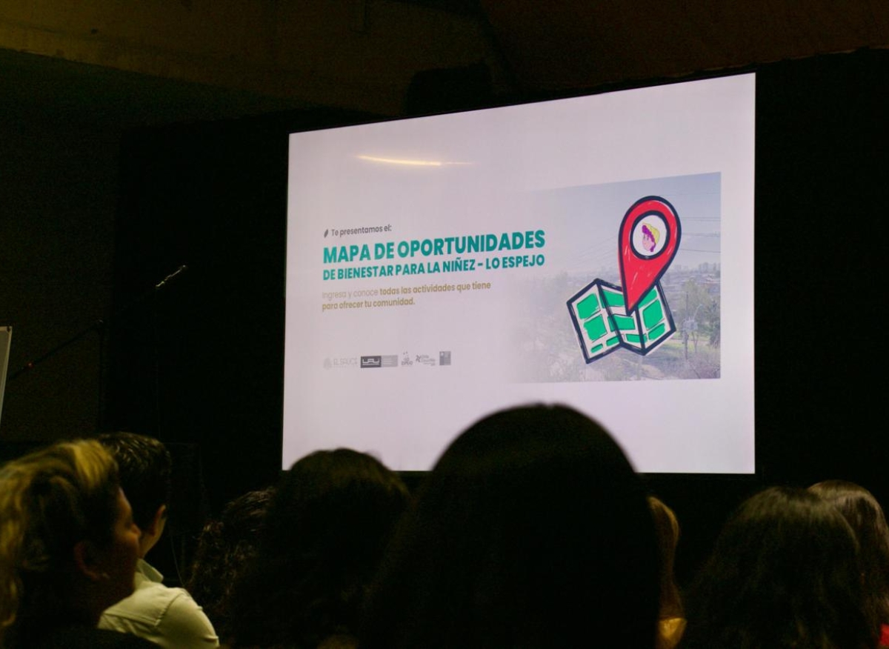

Con el CIT-UAICon CIT-UAI y Municipalidad de Lo Espejo · lanzado el 20 de abril de 2026
Mapa de Oportunidades de Bienestar para la Niñez
Plataforma que georreferencia los programas, servicios y beneficios para NNA de la comuna. Incluye capacitación, uso piloto y acompañamiento para dejar capacidades instaladas.
108programas confirmados
8categorías
≈3.140vistas del visor (sep 2026)
«El desafío más grande es mantenerlo vivo, mantenerlo activo, mantenerlo actualizado.»
Por qué nos importa. Es la base de datos de nuestro proyecto. Hoy es una herramienta para quien planifica; nosotros proponemos su versión para niñas y niños.